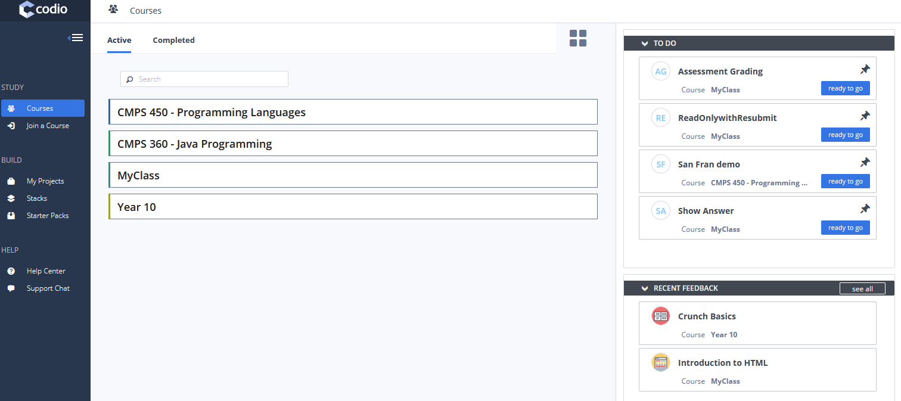
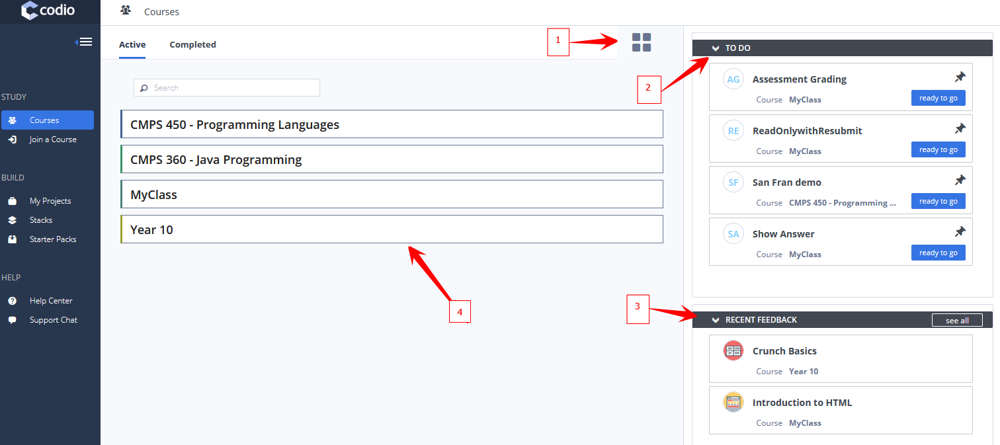
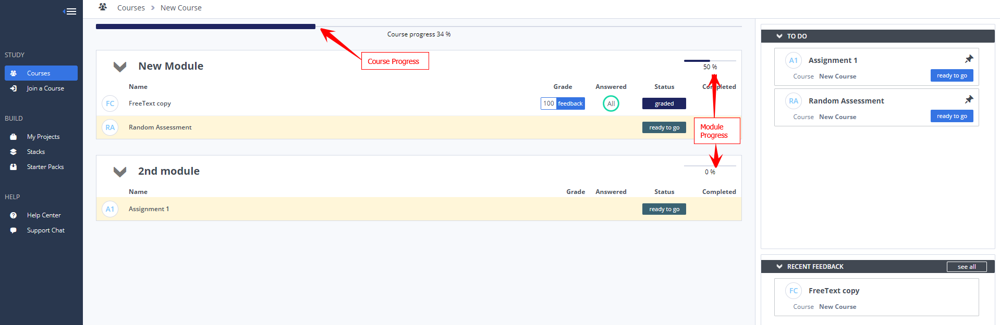

Navigate the Student Dashboard¶
The Student dashboard is the main page students use to navigate Codio.

Navigation menu¶
Use left navigation menu to access the different areas of the UI:
STUDY - Provides a link to access your Courses.
BUILD - Provides links to access project tools and our professional IDE.
HELP - Provides links to our customer service team and our help documentation.
Courses¶
The student courses are displayed in the right pane, as shown below with the default dashboard.

1 - Toggle between list view or tile view to see your courses.
2 - To Do panel shows your assignments, including due dates (if set by your instructor/teacher).
Click the arrow to expand or collapse the panel.
Click the assignment pane open it.
3 - Feedback panel shows a list of recent feedback for your assignments when grades have been released by your instructor.
Click the arrow to expand or collapse the panel.
Click the feedback panel to open it and review your assessments, grading comments, and any code comments from your instructor.
4 - Courses panel is the main panel on the page and is where you can see the courses, modules, and assignments that have been assigned to you, and the end date for the assignment. Up to five pinned assignments can be displayed more prominently at the top of the page. From this area, you can easily re-open the assignment you were last working on, or start any of the other assignments that have been assigned to you. You start or open an assignment using the navigation buttons. If course/module progress bars are enabled by your teacher, you will also see your progress.
Click the course pane to open and view the modules and assignments in the course.
Click the arrow to expand or collapse the course pane.

5 - Leaderboard panel (if enabled by your teacher) is where you can see your overall progress in comparison to other students in the course for mandatory assignments.
Note
You can also create your own projects using the links under BUILD in the left navigation pane. See Creating or Importing a Project for more information.
Projects¶
You can create your own projects using the web-based IDE in Codio. To access the project area, use the BUILD links in the left navigation pane.
See Also: